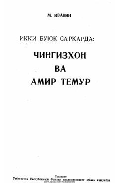

IBChingizxon va Amir Temurning harbiy san'ati va strategik mahorati haqida tarixiy asar.
Ushbu asarda Chingizxon va Amir Temur kabi buyuk sarkardalarning harbiy strategiyalari va taktik mahoratlari tahlil qilinadi. Muallif tarixiy shaxslarning harbiy yurishlari hamda ularning davlat boshqaruvidagi o'rni haqida qimmatli ma'lumotlarni taqdim etadi.